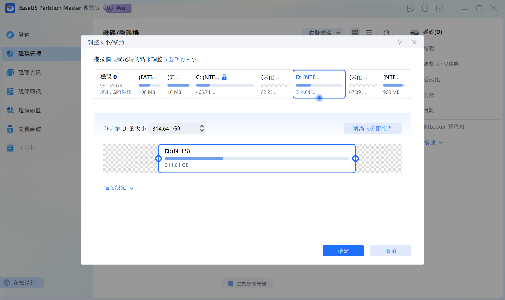

将D盘空间划分给C盘
前段时间换了刚刚换了新的机械革命的笔记本，发现拿到手时磁盘已经预先分好了区，但是 C 盘（系统盘）只分了 200 GB。在装了 WSL 等一些必备的环境后，就只剩下不到 100 GB，感觉很没有安全感（😩），于是就想办法给 C 盘划分更多的空间，以下是一些经验分享。
尝试使用系统自带工具
首先，我尝试着使用 Windows 自带的磁盘管理工具（Windows 11 下右键底部的“开始”键）。
开始的设想是：首先对 D 盘进行“压缩卷”将一部分空闲的存储空间转为“未分配”状态，然后对 C 盘执行”扩展卷“将刚腾出来的”未分配“空间给合并。但是发现 C 盘的”扩展卷“选项是灰色的，不可选。查阅资料得知一个磁盘在进行扩展卷时只能合并与之相邻的磁盘分区，而”压缩卷“腾出的空闲空间是位于磁盘右侧的，该空间无法与 C 盘进行合并，只能重新合入 D 盘中。

借助第三方工具
要想使得 C 盘能够合并 D 盘的空闲空间，就必须使得 D 盘划分出的空闲空间位于 D 盘的左侧，而这必然涉及到磁盘数据的移动，存在数据丢失的风险，Windows 也并没有提供这样的功能。
于是转而寻求第三方工具的帮助，最终发现了一个强大的磁盘处理软件——EaseUS Partition Master。该软件包括很多高级的磁盘处理功能，其中就包括“左右自由划分磁盘分区”。

可以在 D 盘左侧划分出一片空闲空间，随后 C 盘便可以将其合并了。
注意，该软件的此功能为收费功能，若不想为之付费，可自行寻找破解补丁。
最终，C 盘成功被扩展。
本博客所有文章除特别声明外，均采用 CC BY-NC-SA 4.0 许可协议。转载请注明来源 PageFault！
 微信
微信 支付宝
支付宝
相关推荐

2023-03-07
C++面试题总结
由于考研失利，最近在准备春招，想要找一份游戏客户端开发的岗位，便想要将 C++ 常见的面试题整理出来。题目来自牛客网的 C++ 面试题库，答案结合了牛客网给出的参考答案、new bing 给出的回答以及个人的理解和思考。 C++ 和 C 中 struct 的区别，以及 C++ 中 struct 和 class 的区别C++ 和 C 中 struct 的区别 C 中 struct 只能定义成员变量，不能定义成员函数，而 C++ 中 struct 可以定义成员函数，甚至构造函数，析构函数，友元等。 C 中 struct 内的成员变量不可以直接初始化，而 C++ 中可以。 C 中使用结构体需要加上 struct 关键字，或者使用 typedef 对结构体取别名后再直接使用其别名，而 C++ 使用结构体则可以直接忽略 struct 关键字。 C++ 中 struct 和 class 的区别 class 的成员默认是 private 的，而 struct 的成员默认是 public 的。 class 继承默认是 private 继承，而 struct 继承默认是 public 继承。 ...

2022-03-30
循环语句中指针赋值出错
最近在写人工智能作业的时候遇到了一点问题，就是在循环语句中对指针类型赋值出现错误，导致所有的结点的前驱指针最终指向自身。 问题描述以下使用一个简单的示例来模拟当时出现的问题。 MyStruct 为一个自定义结构体类型，包含数据成员 val 和前驱结点 pre。首先将初始结点(0，nullptr)加入队列 Q，随后在每次循环中，用变量 fs 接收队列 Q 的队首元素并将其出队，并根据该结点生成一个新结点，该新结点 val = fs.val + 1，且将其前驱结点设为 fs 并加入到队列 Q 中。直到 fs.val >= 5 时退出循环。 1234567891011121314151617181920212223struct MyStruct{ int val; MyStruct* pre; MyStruct(int v = 0, MyStruct* p = nullptr) : val(v), pre(p) {}};int main(){ std::queue<MyStruct> Q; Q.emplace(0, n...

2024-07-06
MIT6.s081 2021 Lab Traps
使用gdb调试xv6内核从最近两个 Lab 开始，代码逻辑的复杂度明显上升，对内核进行调试可能是帮助理解操作系统机制的绝佳方法。因此在开始本 Lab 之前，我们先来配置一下针对 xv6 内核的 gdb 调试器。 安装 gdb-multiarch. 利用包管理工具进行安装，我使用的是 Ubuntu 系统，执行以下命令： 1sudo apt install gdb-multiarch 在 xv6 项目根目录下可以看到 .gdbinit 文件，其中已经写好了一些 gdb 的初始化选项，使用文本编辑器或 cat 命令查看： 123456set confirm off set architecture riscv:rv64 target remote 127.0.0.1:26000 symbol-fil...

2024-08-13
MIT6.s081 2021 Lab Multithreading
Uthread: switching between threads思路xv6 已经实现了进程的切换机制，本实验要求参考进程的切换，实现一个用户态线程的切换。 要实现线程切换，必然涉及上下文，即寄存器的保存和恢复，那么需要保存哪些寄存器？实际上，只需要保存被调用者保存寄存器（callee-saved registers），而实现调用者保存寄存器（caller-saved registers）的保存与恢复的代码由编译器自动生成。关于调用者保存与被调用者保存寄存器有哪些可以参照下述 RISC-V 的 calling convention： 另外，根据 user/uthread_switch.S 的注释，thread_switch 最后通过 ret 指令将当前程序计数器的值切换为 ra 寄存器中存储的地址，实现进程的“切换”，因此 struct thread 中还需要保存每个线程对应程序的起始地址（即函数指针）。 在了解需要保存哪些寄存器之后以及如何进行线程切换之后，还有一个细节需要考虑，即栈指针寄存器（sp）的初始化。线程栈的存储位置为 struct thread 中的 stack...

2024-06-24
MIT6.s081 2021 Lab Utilities
Boot xv6按照示例切换到 util 分支后，看到目录下包含 Makefile 文件，执行 make qemu 即可。 sleep思路借助系统调用 sleep 实现一个命令行程序，关键是要找到封装了系统调用的 C 函数的位置，根据提示： … user/user.h for the C definition of sleep callable from a user program … 可知该函数的声明位于 user.h 头文件中，声明方式很简单： 1int sleep(int); 将其“拷贝”（include）到需要编写的代码 user/sleep.c 中，调用 sleep(<睡眠时间>) 即可。 最后，按照提示，将编写的 sleep 代码添加到 Makefile 的 UPROGS 中，添加后如下所示： 123456789101112131415161718UPROGS=\ $U/_cat\ $U/_echo\ $U/_forktest\ $U/_grep\ $U/_init\ $U/_kill\ $U/_ln\ ...

2025-12-23
个人常用git命令整理
由于最近刚刚快速过完了一遍《Pro Git》，因此想要将个人比较常用的 git 命令整理出来，以便需要时翻看。因此本文是一个个人向的笔记，不会涉及对 git 原理的介绍，这部分的具体内容可以参考《Pro Git》。 准备阶段初始化配置12345678# 全局配置文件位置~/.gitconfig# 全局配置用户名git config --global user.name <your_name># 全局配置邮箱git config --globale user.email <your_email> 新建仓库12345# 本地初始化仓库git init <repo_name># 远程克隆仓库git clone <repo_url> 工作阶段查看日志123456789# 查看当前分支提交日志git log# 查看 HEAD 指针的变动日志git reflog# 查看当前仓库状态# 包括未跟踪文件、工作区变更、暂存区内容git status 提交文件123456789# 将工作区更新文件存入暂存区git add <file_path&...